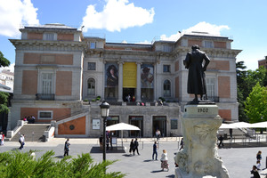

| Etapa 5: Madrid |
|---|
| Provincia: Madrid | Superficie: 8.021 km2 | Población: 6.436.996 (809 hab./km2) |  |
| Municipio(s) visitado(s): Alcalá de Henares, Aranjuez, Madrid |
| Distancia recorrida: 0 km | Fecha: 2008, 2016, 2017 | Duración: Varios meses |
| Arquitectura civil: |
| Arquitectura religiosa: |
| Museos: |
| Naturaleza: |
| Otros: |
Dado que he estado unos meses viviendo en la Comunidad de Madrid, han sido varios los días salteados en los que he hecho turismo por la provincia. Esta es una etapa «especial» que resume algunos de los lugares visitados, sin más orden que el alfabético para los municipios y el cronológico cuando he repetido visita.
- Alcalá de Henares
- Casa Cervantes
- Museo Arqueológico Regional
- Torre de Santa María
- Aranjuez
- Camarma de Esteruelas
- Los Santos de la Humosa
- Madrid
- Museos: Prado, Reina Sofía, Thyssen, Antropológico, Geominero, Cerralbo, Anden 0
- Jardín Botánico
- Callejeando
- Feria del libro, El Retiro
- Biblioteca Nacional
- Congreso
- Faro de Moncloa
- Torrejón de Ardoz
{kind=link}